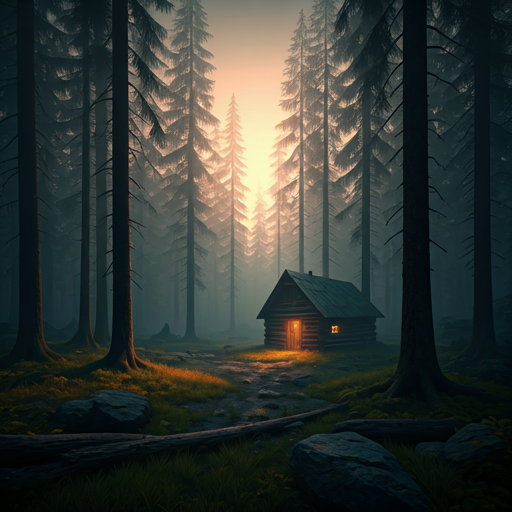

Journeys
Silence in the Pines
Finding clarity in the profound quiet of the Northern woods, far from the hum of connectivity.
A curated collection of thoughts, explorations, and visual narratives gathered from the quiet corners of the world.

Finding clarity in the profound quiet of the Northern woods, far from the hum of connectivity.
How observing the slow crawl of dunes shifted my perspective on urgency.
A photographic study of forgotten objects and the stories etched into their surfaces.
Tracing the lines between modern brutalism and ancient spiritual spaces.
Walking the boundary where earth yields to water, over and over again.